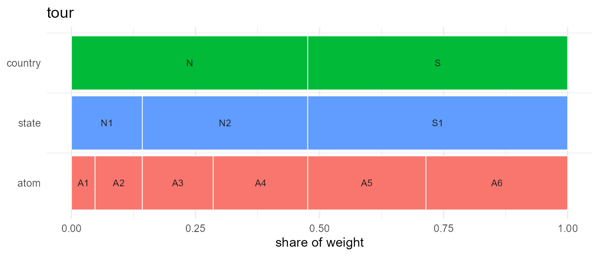
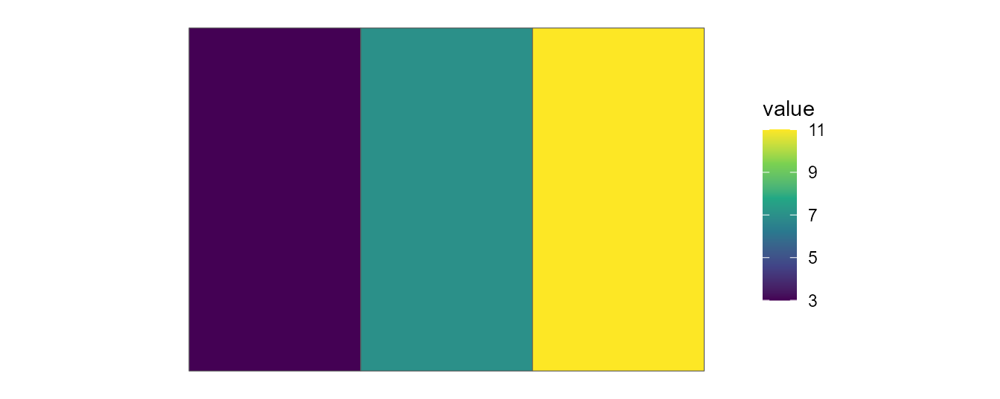
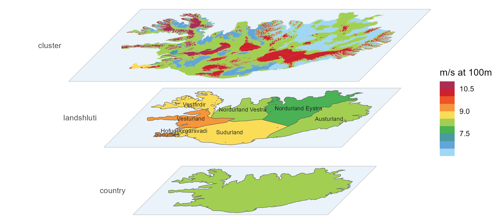

What problem does this solve?
Energy-system, climate, and policy models carve space into discrete regions, and different models pick different carvings: one nation, five grid regions, thirty-two model regions, forty-six zones. The codes are arbitrary, the weights (area, population) are data, and region systems drawn by different hands rarely nest — converting values between them is where unit errors live.
geoscales represents any such carving as a
Geoscale: a set of atoms (the finest regions)
plus ordered geoframes that group them — the spatial companion
to a timescales::Calendar. With one object you get:
- a stable schema for region codes and their weights,
- well-defined conversions between any two resolutions — including cross-cutting ones, because every conversion routes through the atom layer,
- attachment of hierarchy columns to your tables, and ggplot2-ready maps.
A 5-minute tour
1. Build a Geoscale
Three construction layers, from most to least convenient — a provider, parent-child crosswalks, or a wide table you already have:
gs <- geoscale_from_leaftable(
data.frame(
country = c("N", "N", "N", "N", "S", "S"),
state = c("N1", "N1", "N2", "N2", "S1", "S1"),
atom = c("A1", "A2", "A3", "A4", "A5", "A6"),
km2 = c(100, 200, 300, 400, 500, 600)
),
geoframes = c("country", "state", "atom"),
name = "tour"
)
gs
#> Geoscale: tour
#> Geoframes (3, coarsest first):
#> - country (2)
#> - state (3)
#> - atom (6)
#> Atoms: 6
#> Weights: km2 (default: km2)(geoscale_build() assembles the same thing from ragged
parent-child crosswalks; geoscale_from_provider() pulls a
source like Natural Earth — see
vignette("from-naturalearth").)
2. Inspect the structure
gs@geoframes # the hierarchy, coarsest first
#> [1] "country" "state" "atom"
head(geoscale_leaftable(gs), 3) # one row per atom
#> country state atom km2 region
#> 1 N N1 A1 100 A1
#> 2 N N1 A2 200 A2
#> 3 N N2 A3 300 A3
geoscale_regions(gs, "state")
#> [1] "N1" "N2" "S1"
geoscale_share(gs, "state", weight = "km2", within = "country")
#> state country km2 share
#> 1 N1 N 300 0.3
#> 2 N2 N 700 0.7
#> 3 S1 S 1100 1.03. Convert data between resolutions
One rule per value column; aggregation and disaggregation are the
same operation, and totals conserve under "sum":
cap <- tibble(atom = paste0("A", 1:6), capacity = c(1, 2, 3, 4, 5, 6))
cap |> recast_geoscale(gs, from = "atom", to = "country", rule = "sum")
#> # A tibble: 2 × 2
#> country capacity
#> <chr> <dbl>
#> 1 N 10
#> 2 S 11
# ... and back down, split by area
tibble(country = c("N", "S"), capacity = c(10, 20)) |>
recast_geoscale(gs, from = "country", to = "state",
rule = "sum", weight = "km2")
#> # A tibble: 3 × 2
#> state capacity
#> <chr> <dbl>
#> 1 N1 3
#> 2 N2 7
#> 3 S1 20The rule is deliberately mandatory — pass one, or
register it per column with register_geoscale_rule(); a
silently guessed rule would be a silent unit error.
4. Attach a Geoscale to a table
join_geoscale() decorates rather than converts —
membership and share/weight columns arrive
"<name>."-prefixed, so several Geoscales can coexist
on one dataset:
tibble(state = c("N1", "N2", "S1"), v = 1:3) |>
join_geoscale(gs, geoframes = TRUE, meta = TRUE)
#> # A tibble: 3 × 6
#> state v tour.country tour.weight tour.share tour
#> <chr> <int> <fct> <dbl> <dbl> <chr>
#> 1 N1 1 N 300 0.143 N1
#> 2 N2 2 N 700 0.333 N2
#> 3 S1 3 S 1100 0.524 S15. Visualize
geoscale_autoplot() (also plot()) draws the
hierarchy itself — no geometry needed (and with
data =/z = its bands fill with a value recast
to every geoframe — see the visualization article):

With geometry attached (any sfc aligned with the atoms),
geom_geoscale() puts values on a map inside a normal
ggplot() pipeline. The data must be keyed at the geoframe
you draw, so recast finer data up first:
sq <- function(x, y) sf::st_polygon(list(cbind(
c(x, x + 1, x + 1, x, x), c(y, y, y + 1, y + 1, y))))
gs <- attach_geometry_geoscale(gs, sf::st_sfc(
sq(0, 1), sq(0, 0), sq(1, 1), sq(1, 0), sq(2, 1), sq(2, 0)))
cap |>
recast_geoscale(gs, from = "atom", to = "state", rule = "sum") |>
ggplot() +
geom_geoscale(gs = gs, z = "capacity", geoframe = "state") +
scale_fill_viridis_c() +
theme_geoscale()
(The visualization article does the same on real maps.)
From raster data to a Geoscale: wind clusters
The stack on the package’s front page is a real, data-built hierarchy: Iceland’s onshore wind resource from the Global Wind Atlas, clustered within each administrative region into contiguous wind-speed classes. That is the standard renewable-modeling move — a model wants a handful of supply regions per admin unit, ranked by resource quality, not two million raster cells.
The pipeline below is complete and pasteable (packages: sf, terra,
dplyr, globalwindatlas;
a one-time ~64 MB download plus a few minutes of geometry work). It is
the same code as data-raw/iceland_wind.R in the repository,
which additionally caches the slow steps and pre-saves the result. Not
run while building this page.
Raw materials — the wind-speed raster and the admin regions:
library(sf) # load sf BEFORE terra -- the reverse order can crash
library(terra) # an R session on Windows (GDAL DLL clash)
library(dplyr)
# 100 m mean wind speed for Iceland, one GeoTIFF. Pass `filename`
# explicitly -- the default filename handling mangles "data-raw"
tif <- globalwindatlas::gwa_get_wind_speed(
"ISL", height = 100, filename = "data-raw/gwa/ISL_wind_speed_100.tif")
# onshore regions from Natural Earth; the capital region arrives split
# in two -- merge by name, and keep an ISO code per region for the
# cluster ids
ne <- ne_source(geoframe = "states", country = "Iceland")
reg <- ne |>
group_by(region = gn_name) |>
summarise() |>
st_make_valid()
iso <- ne |>
st_drop_geometry() |>
group_by(region = gn_name) |>
summarise(iso = max(iso_3166_2))
# contiguous ">= 8" and ">= 10" m/s resource classes within each
# region: threshold -> polygonize -> simplify -> buffer -> drop crumbs
int <- c(0, 8, 10)
grp <- globalwindatlas::gwa_group_locations(
tif, gis_sf = reg, ID = "region", int = int,
aggregate_tif = 2, plot_process = FALSE)Classes to clusters — everything in a projected CRS
(ISN93 Lambert), where the geometry ops are robust. Two boundary rules
keep the later dissolves exact (up-aggregation on the map is a
union of atoms, and unions only merge cleanly when shared edges
match to the last coordinate): region borders are simplified
topology-aware (rmapshaper::ms_simplify()
simplifies each shared arc once — sf::st_simplify() would
treat each side independently and leave sliver “ghost borders”), and
each region is carved so that every piece is differenced from the region
itself, the last class being the region’s remainder:
grp_m <- st_as_sf(grp)[, c("region", "int")] |>
st_transform(3057) |> st_make_valid() |>
st_simplify(dTolerance = 300) |> st_make_valid()
reg_m <- reg |>
st_transform(3057) |> st_make_valid() |>
rmapshaper::ms_simplify(keep = 0.2, keep_shapes = TRUE) |>
st_make_valid()
only_poly <- function(g) { # keep polygons, drop stray pieces
if (length(g) == 0) return(st_sfc(st_polygon(), crs = st_crs(g)))
g <- st_make_valid(g)
i <- st_geometry_type(g) == "GEOMETRYCOLLECTION"
if (any(i)) g[i] <- st_collection_extract(g[i], "POLYGON") |> st_union()
g
}
clusters <- lapply(seq_len(nrow(reg_m)), function(i) {
rg <- st_geometry(reg_m)[i]
cls <- grp_m[grp_m$region == reg_m$region[i] & grp_m$int > min(int), ]
cls <- cls[order(-cls$int), ]
out <- vector("list", nrow(cls) + 1L)
acc <- NULL # union of the pieces cut so far
for (k in seq_len(nrow(cls))) {
pk <- only_poly(st_intersection(st_geometry(cls)[k], rg))
if (!is.null(acc)) pk <- only_poly(st_difference(pk, acc))
acc <- if (is.null(acc)) pk else only_poly(st_union(acc, pk))
out[[k]] <- st_sf(region = reg_m$region[i], int = cls$int[k],
geometry = pk)
}
out[[nrow(cls) + 1L]] <- st_sf(region = reg_m$region[i], int = min(int),
geometry = only_poly(st_difference(rg, acc)))
do.call(rbind, out)
})
clusters <- do.call(rbind, clusters) |>
filter(!st_is_empty(geometry),
as.numeric(units::set_units(st_area(geometry), "km^2")) > 1) |>
group_by(region) |>
arrange(desc(int), .by_group = TRUE) |>
mutate(rank = row_number()) |> # c1 = windiest class of its region
ungroup() |>
left_join(iso, by = "region") |>
mutate(cluster = paste0(iso, "_c", rank)) |>
st_as_sf()
# per-cluster mean wind speed (from the full-resolution raster) + area
r <- rast(tif)
clusters$wind <- terra::extract(
r, vect(st_transform(clusters, st_crs(r))),
fun = mean, na.rm = TRUE, ID = FALSE)[[1]]
clusters$km2 <- as.numeric(units::set_units(st_area(clusters), "km^2"))Assemble the Geoscale — the clusters are the atoms:
gs <- geoscale_from_leaftable(
clusters |>
st_drop_geometry() |>
transmute(country = "Iceland", landshluti = region, cluster, km2),
geoframes = c("country", "landshluti", "cluster"),
key = "cluster", name = "iceland_wind"
) |>
attach_geometry_geoscale(clusters, by = "cluster", geoframe = "cluster")
wind <- clusters |> st_drop_geometry() |> select(cluster, wind)The result is an ordinary three-geoframe Geoscale — the clusters are
its atoms, so everything above applies. The repository ships it
pre-built (data-raw/iceland_wind.rds, written by
data-raw/iceland_wind.R), which is what renders here:
recast the per-cluster wind speed up to the regions with an
area-weighted mean,
iceland <- readRDS("../data-raw/iceland_wind.rds")
head(geoscale_leaftable(iceland$gs), 4)
#> country landshluti cluster km2 region
#> 1 Iceland Austurland IS-7_c1 5340.2458 IS-7_c1
#> 2 Iceland Austurland IS-7_c2 8533.1805 IS-7_c2
#> 3 Iceland Austurland IS-7_c3 7696.1286 IS-7_c3
#> 4 Iceland Hofudborgarsvadi IS-1_c1 165.8929 IS-1_c1
iceland$wind |>
recast_geoscale(iceland$gs, from = "cluster", to = "landshluti",
rule = "weighted_mean", weight = "km2")
#> landshluti wind
#> 1 Austurland 8.694984
#> 2 Hofudborgarsvadi 9.115198
#> 3 Nordurland Eystra 8.406143
#> 4 Nordurland Vestra 8.796206
#> 5 Sudurland 9.108633
#> 6 Sudurnes 9.524734
#> 7 Vestfirdir 9.313962
#> 8 Vesturland 9.527264or hand the atom-level values straight to the stack view, which
recasts them onto every plane itself (data/z)
and labels a chosen geoframe (labels).
palette = NULL leaves the fill scale to the caller — here
the Global Wind Atlas palette from energypal, whose
colours sit on the atlas’s absolute breaks (limits only
windows the legend); frame and connectors draw
the plane sheets and corner guides that make the perspective legible
around curved coastlines, a mostly transparent frame_fill
turns the sheets into glass panes, and a per-plane colour
vector drops the borders on the fragment-heavy cluster plane. This is
the front-page figure:
geoscale_autoplot(iceland$gs, type = "stack", view = "perspective",
direction = "down", data = iceland$wind, z = "wind",
labels = "landshluti", palette = NULL, gap = .275,
colour = c("grey35", "grey35", NA), # no cluster borders
frame = TRUE, connectors = FALSE,
frame_fill = ggplot2::alpha("#6FA8DC", 0.15)) +
energypal::scale_fill_energy_b(limits = c(6.5, 11.5)) +
ggplot2::labs(fill = "m/s at 100m")
Wind data: Global Wind Atlas — DTU, in partnership with the World Bank Group, data by Vortex, funded by ESMAP.
Offshore wind areas would slot in as a sibling branch of the same hierarchy, but they first need a regionalization of the sea area — deferred for now.
Where to next?
- Concepts — atoms, partitions vs trees, the shared *scales glossary.
-
Data structures — anatomy of a
Geoscaleand its registries. - Data manipulation — attach, recast, route halves, crosswalks, backends, and chaining time with space.
- Building from Natural Earth — providers in practice.
-
Visualization — maps with
geom_geoscale(), on a real multi-layer example.